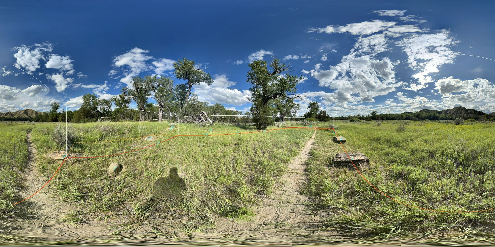
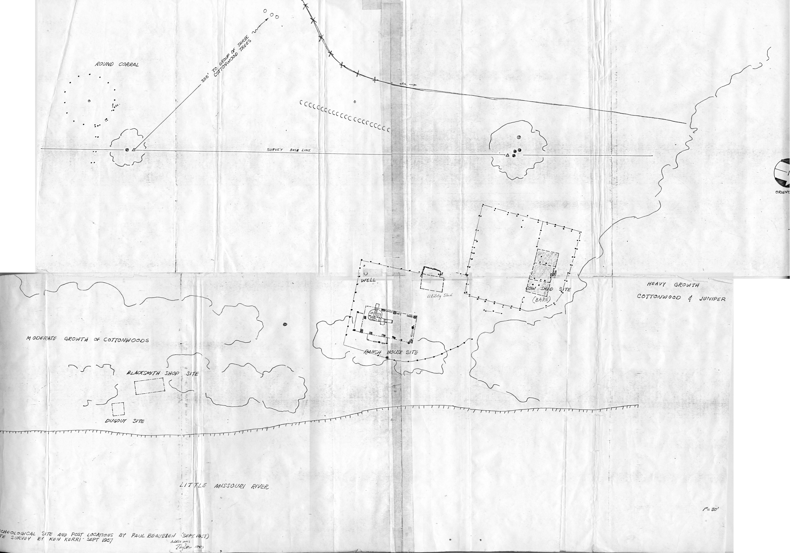
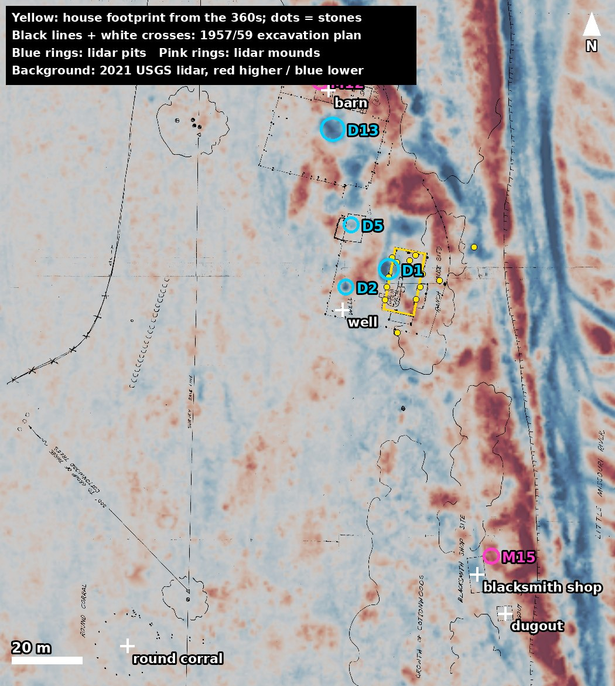
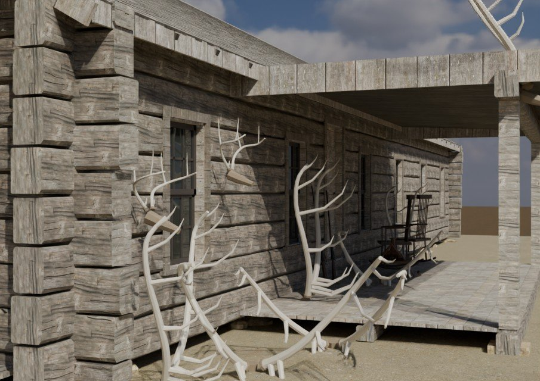
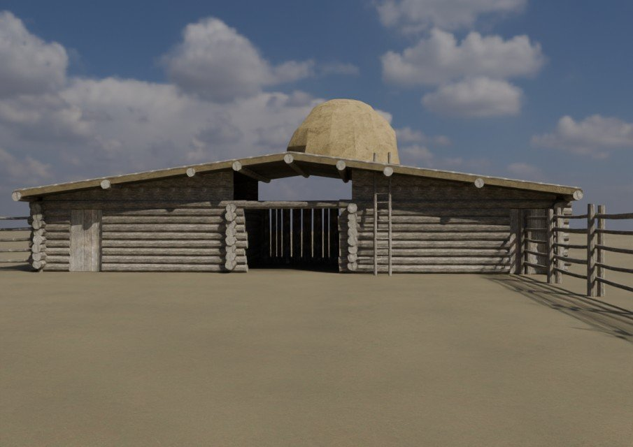
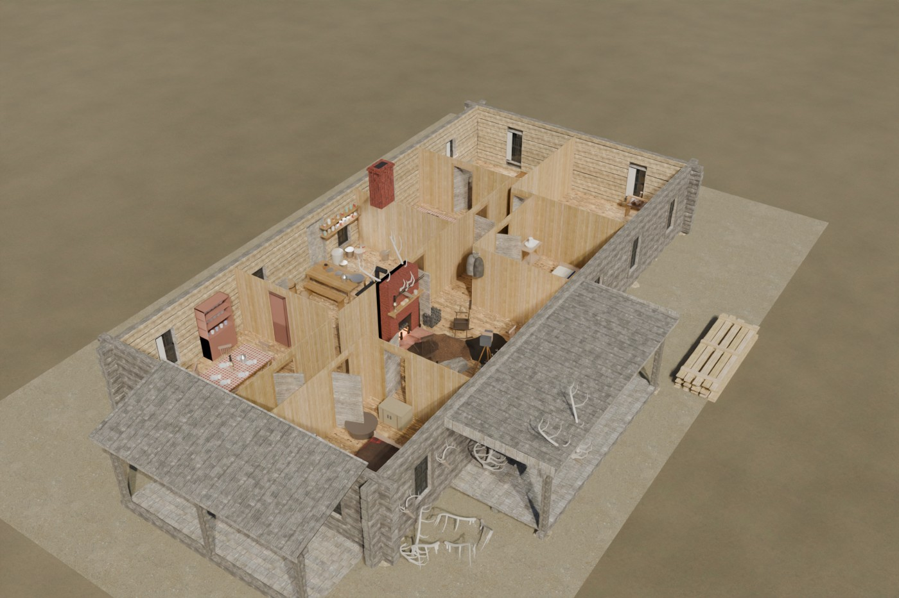
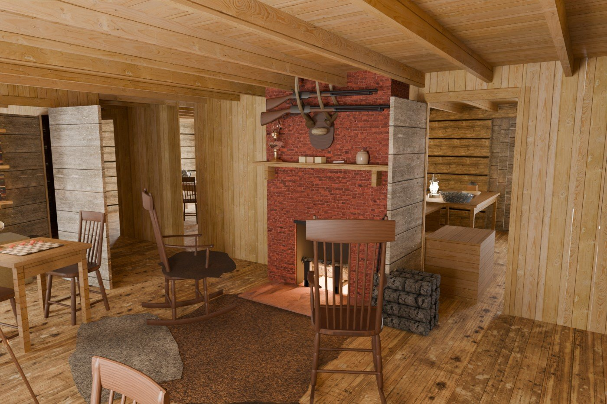

Three independent kinds of evidence put Theodore Roosevelt's Elkhorn ranch house on the line of foundation stones that stands today, facing about 12° east of true north. They also point to likely spots for the well and barn. Each is a desk finding until it is checked in the field with the National Park Service.
Question and approach
The goal is to fix where the Elkhorn buildings stood (the house, well, barn, shed, blacksmith shop, dugout and corral) accurately enough to place a 3D reconstruction in augmented reality at the site. The work answers one question: where, to the meter, did each structure stand?
No single source answers that. The method combines three that do not depend on each other, then tests where they agree:
- Ground photographs. The Library's own 360° panoramas of the ruins show the surviving foundation stones from several points.
- Terrain. USGS lidar from 2021 records the ground surface to within a few centimeters and can reveal pits, mounds and banks.
- The record. The Park Service's 1957–59 excavation produced a measured site plan, and period accounts describe where things stood.
A fourth step lays the excavation plan onto the ground using the panorama footprint, then checks whether the lidar shows something where the plan says a building stood.
A fifth step rebuilds the ranch in 3D from all of the above and checks the model against T.R.’s 1886 photographs. A sixth adds the terrain, trees and river, and furnishes the rooms from the written record.
Sources used
| Source | Date | What it gives | Resolution or scale | Rights |
|---|---|---|---|---|
| Library 360° panoramas (7), elkhorn.labs.trlibrary.com | July 6, 2025 | Foundation stones seen from several points; compass heading per image | 4608 × 2304 px; phone GPS ±12 m | Library-owned |
| USGS 3DEP lidar, project ND_SouthWest_2021_D21 | Nov 6, 2021 (leaf-off) | Bare-earth surface; tree heights | About 5 ground points per m²; 0.5 m grid; 2.4 cm noise | Public domain |
| Dee C. Taylor, Archeological Investigations of the Elkhorn Ranch Site (NPS) | 1959 | Excavated building dimensions, distances, well, cellar | Text and measured plan | Federal record |
| Beaubien–Taylor site plan (in Taylor 1959) | Sept 1957, additions 1959 | Positions of house, well, barn, shed, blacksmith shop, dugout, corral, fences, river bank | 1 in = 30 ft | Federal record |
| Mattison, NPS location study and North Dakota History 27:2 | 1950, 1960 | Site identification; letters from settlers; photo positions | Text | Published |
| Torres, Historic Structure Report, Elkhorn Ranch (NPS) | 1980 | Building descriptions; house blueprint | Text, plan | Federal record |
| Sewall (1919), Hagedorn (1921), T.R.'s Ranch Life (1888) and Autobiography (1913) | 1888–1921 | Eyewitness descriptions and T.R.'s photographs | Text, halftones | Public domain |
| USDA aerial photos CCN-3T-168, CCN-4T-012 (ND GIS Hub mosaic) | July 31, 1957 | The site two months before excavation; river position | About 0.5 m; not orthorectified | Public domain |
| NAIP orthoimagery (ND GIS Hub, USGS) | 2024 and earlier | Current trails, clearing, trees | 0.6 m | Public domain |
| Esri World Imagery | Recent | Sharper view of mowed paths | About 0.3 m | View only; not for publication |
Step 1: House footprint from the 360° panoramas
The panoramas place the house against its own stones, but only roughly on a map. Each image stores a compass heading at its center, so any pixel converts to a true bearing. The angle below the horizon converts to a distance once the camera height is known.
- Check the headings. For each panorama, the predicted sun position for its time and place was compared with the brightest point in the sky. Six of seven agreed within 3°, and a butte summit lined up within 0.5° across panoramas 1, 2 and 5. The headings are true north, not magnetic (local declination is about 7°).
- Check the GPS. Each image's GPS time was compared with its capture time. Panorama 2 carried a fix three minutes stale, and the fresh fixes of panoramas 1 and 5 disagree by about 23 m. GPS was therefore treated as approximate (±12 m).
- Measure the stones. Every visible foundation stone was given a label (A–M) and measured at full resolution: bearing and depression angle to its ground contact.
- Match and solve. Stones seen from more than one panorama tie the panoramas together. Panoramas 1 and 5 share six stones; panorama 2 sees three more. A joint least-squares solution fits bearings to about 0.5°. Panoramas 3, 4, 6 and 7 show no foundation stones and were not used.
- Set the scale. The stones form two parallel rows (west: F, G, H, A, straight to within 0.2 m over 13 m; east: J, L, K). Taking the row spacing as the documented 30 ft (9.14 m) implies a camera height of 1.36 m, plausible for a handheld capture. Distances carry about ±10%.
- Fit the house. A 60 × 30 ft rectangle was fitted to the rows. Its long axis runs 11.7° east of true north (±3°). Stones show along only 12–14 m of the 18.3 m length, so two placements are kept: one with the north wall on stones A and M, and one centered on the rows (3 m further north).
Check: the Park Service's "Cabin Site" stop coordinate falls 1.9 m from the fitted center.

Step 2: Feature detection in the lidar
The lidar can see features about 2 m across with 8–10 cm of relief or more. It cannot see individual stones, postholes or fence lines.
- Get the points. The USGS point cloud for the site was read from the public 3DEP copy on Amazon S3 (
usgs-lidar-public/ND_SouthWest_1_D21) and clipped to a 300 × 300 m square. It matches the USGS 1 m elevation model to a median of 0.1 cm. - Check density. Ground returns average 5.0 per m² inside the house area (spacing about 0.45 m), and only 1% of 1 m cells near the house lack a ground point. The data were flown leaf-off in November, so trees did not block the ground.
- Build surfaces. A 0.5 m bare-earth model was triangulated from ground points, plus a canopy-height model from first returns.
- Visualize. Archaeology-style views were made: multi-direction hillshade, local relief at 2, 5 and 10 m radii, sky-view factor, slope and 10 cm contours.
- Detect. Pits were found by fill-sinks depth (at least 0.08 m) and mounds by local relief (at least ±0.10 m), with a 1 m² minimum. That gave 618 raw hits and 238 after screening. "Tier A" features are compact, in open grass, off the river bank, and at least 0.15 m deep or 0.18 m high.
- Screen out the modern. Every candidate was compared with current imagery for trails, panels, fences and trees. A ring test scored rims around pits in 12 sectors; pit D2 scored 10 of 12, the highest in the tile.
- Measure the background. Tier-A features run 24 per hectare within 25 m of the house but only 1–5 per hectare at 50–150 m. A feature far from the house is therefore much less likely to be chance.
The lidar also traced the bank the house stood above: a terrace edge 18–37 m east of the house with a 2 m drop. The river now runs about 140 m east.
Step 3: The documentary record
The 1957–59 excavation plan is the backbone of this step. Paul Beaubien surveyed the site in September 1957 and Dee C. Taylor added his 1959 findings to the same plan, drawn at 1 inch = 30 feet. It survives as two scans inside Taylor's report.
- Collect. Taylor's full report and the related Park Service studies were downloaded from the Theodore Roosevelt Center's digital library and npshistory.com, then OCR'd.
- Extract every spatial statement. Each direction or distance in any source was logged with its exact wording and page, for example the well "located 33 feet from the southwest corner of the house" (Taylor, p. 33).
- Rebuild the plan. The two scans were joined by eye along fences that cross the seam (good to about ±4 ft). The scale was confirmed at 5.0 pixels per foot against four measured features: the house (60 × 30 ft), blacksmith shop (33 × 16 ft), dugout (14 ft) and round corral (62 ft).
- Log conflicts rather than resolve them. Sources disagree on several points, and each disagreement is kept with both readings:
| Point | Readings |
|---|---|
| Well distance | 33 ft from SW corner (Taylor text); about 37 ft on the plan; "about 50 feet west of the house" (1949 settler letter) |
| House to river bank | 70 ft (Taylor); 75 ft (1949 letter); about 84 ft on the plan |
| Barn distance | About 150 ft NW (Taylor); about 190 ft on the plan; "a hundred yards or more westward" (Hagedorn) |
| Dugout distance | 30–40 yards (Hagedorn); about 95–110 yards SSE as excavated |
| Storehouse side | East of the house (Mattison's paraphrase); "west of the house and well" (Taylor quoting the same letter) |
| Roof | "Flat" (Sewall, 1919); low-pitched and shingled (T.R.'s photographs) |

Step 4: Registering the plan and scoring matches
The plan was laid on the ground using only the house, then everything else on it was treated as a prediction to test against the lidar.
- Fit. The plan's house outline was matched to the panorama footprint: scale fixed by the plan's 1 in = 30 ft, position by the house center, and rotation by the house's long axis.
- Independent check on rotation. On the plan, the house axis sits 11.2° from the plan's frame; the panoramas give 11.7° from true north. Only 0.5° of rotation was needed. The two measurements agree, which is consistent with the plan having been drawn to true north.
- Independent check on position. The river bank drawn on the 1957 plan falls on the terrace edge in the 2021 lidar. Nothing in the fit used the bank, so this is a genuine test.
- Project. Every other feature on the plan was converted to latitude and longitude. Expected error is about 3–5 m near the house and 5–10 m at 100 m, from the north–south uncertainty of the footprint, the scan seam and ±3° of rotation.
- Score. For each projected feature, the nearest lidar candidates were listed with their distance. A Tier-A candidate within about 6 m counts as support where such features are rare (beyond 50 m, an expected 0.01–0.06 by chance). Near the house, where pits and mounds are common, a nearby candidate counts for little.
Results to date
The house position is solid; the well and barn are leads; the rest are not yet supported by the lidar. Distances are from the house center.
| Feature | Where the record puts it | What the lidar shows | Fit | Confidence |
|---|---|---|---|---|
| Ranch house | 60 × 30 ft, about 70 ft west of the river bank (Taylor) | No cellar hollow inside the outline; a 7 m hollow (D1) just outside the west wall, parallel to it | Placed by the stones; rotation and bank confirmed | High relative to the stones; ±12 m on a map |
| Well | 33–37 ft from SW corner (Taylor, plan); about 50 ft west (1949 letter) | Round pit with raised rim (D2), 2.7 m across, 0.36–0.45 m deep, 16 m due west | 7 m from the plan's spot; matches the 1949 letter | Moderate |
| Barn | About 59 m NNW on the plan | Mound (M12) 3 m away; 9 × 7 m hollow (D13) 11 m away | Rare features this far out | Moderate to low |
| Utility shed | About 21 m NW on the plan | Small pit (D5) 1 m away | Ground near the house is busy | Low |
| Blacksmith shop | About 83 m SSE, near the bank | Mound (M15) 5.5 m away, beside a trail, wrong orientation | Weak | Low |
| Dugout | In the bank face, about 96 m SSE | Nothing distinct | — | None yet |
| Round corral | About 127 m SW, 62 ft across | Posts too small to detect | — | None yet |
| River bank | 70–75 ft east of the house (Taylor; 1949 letter) | Terrace edge 18–37 m east, 2 m drop; river now about 140 m east | Plan's bank line falls on it | High |

One correction to earlier notes: two features 22–26 m southeast of the house (M4, D4) were first suggested as the blacksmith shop. The plan puts the shop about 83 m out, so they are not it.
Step 5: The 3D reconstruction
With the footprint fixed and the outbuildings placed, the ranch was rebuilt as a full-scale 3D model. Open the 3D viewer to look around it, or on a phone tap “View in your space” to stand it up in front of you.
How it was built. Each building is generated by script in Blender from a written specification. Every dimension in the specification cites its source: Sewall’s letters, Taylor’s and Beaubien’s excavation measurements, the Mattison and Historic Structure reports, and measurements taken off T.R.’s own 1886 photographs. Where the record is silent, the specification marks the value as conjectural and uses period Dakota ranch practice.
Matching T.R.’s photographs. For the veranda and stables photographs, the camera position was solved from the positions and apparent heights of known features (windows, door, corner) in the print. Rendering the model from that camera and laying it beside the photograph exposed errors. The clearest: the photograph puts the east veranda about 9¼ ft deep, deeper than the 6 ft that Taylor reported and matching T.R.’s own sketch plan. The model uses 9¼ ft.
Materials. Hewn cottonwood logs and sawn pine shingles use textures made for this model, with season checks and broad-axe scoring drawn along the grain, then toned to match weathered wood of the period. Chinking, sod roofs, brick, stone and poles use public-domain (CC0) photographed materials, color-corrected the same way.


| Structure | Size | Main evidence | Confidence |
|---|---|---|---|
| Ranch house | 60 × 30 ft | Excavated outline, 360° stone survey, veranda photograph, Sewall letters | High |
| Veranda props | — | Veranda photograph | High |
| Stables | 52 × 16 ft | Sewall, Dec. 20, 1885; burn area; stables photograph | High |
| Blacksmith shop | 33 × 16 ft | Taylor 1959 excavation; river photograph | Medium |
| First cabin (dugout) | 14 × 12 ft inside | Beaubien 1957; river photograph | Medium |
| Round horse corral | 62 ft across | T.R. 1888; Beaubien 1957 | Medium |
| Storehouse and hen house | 16½ × 25 ft; 13½ × 19½ ft | Burned rubble outline (Taylor 1959) | Low |
| Well and fences | — | Taylor 1959; fence lines approximate | Low |
Open questions. The veranda photograph shows a chimney cap whose line of sight falls well north of the kitchen chimney Taylor found, which may be the sitting-room fireplace T.R. described. It is not modeled until the excavation records can be checked. The cottonwood grove, the river and the terrain are not modeled yet, so the views from the southeast and across the river cannot be compared with T.R.’s photographs.
For AR. The model is exported as compressed glTF files (about 2.5 MB for the house, 4.4 MB for the whole ranch). Its origin is the center of the house footprint at 47.24191, −103.62226, with the long axis 11.7° east of true north. Standing the model on the ruins themselves needs the surveyed corner positions from the field visit below and a geo-anchored AR app; the web viewer places it at full size wherever the phone is pointed.
Step 6: Setting and interiors
Terrain, river and trees. The ground around the ranch is now built from the 2021 USGS lidar. That covers about 800 m at 1 m detail and 4.8 km at 8 m detail, which brings in the buttes behind the house. A water surface marks the Little Missouri. Cottonwoods and junipers are placed from the lidar canopy model, and a grove of cottonwoods south and southeast of the house is added as it appears in T.R.’s photograph from that side. Terrain and trees are for the renders and the web viewer only. In AR the real ground and trees are there already.
The two remaining photo comparisons.
- House from the southeast. From the camera solved earlier, the house sits in the frame where it does in T.R.’s print. The south gable, the piazza and the line of the east wall match, under a canopy of tall cottonwoods. The 1886 grove is placed by eye from the photograph, so tree positions are approximate.
- From across the river. Matching the outline of the buttes in the print to the lidar terrain fixed the camera independently of the buildings. It stood about 400 ft from the house, on a bearing of about 117° from the house’s long axis, with a lens covering about 64° across the full scan. From there the house lands where it is in the print. The blacksmith shop and first cabin land about 8° (roughly 40 ft) south of where the print shows them. Either the site-plan registration puts them slightly too far south, or the print is trimmed unevenly. This is worth checking at the concrete markers during the field visit. The river has moved since 1886, so the foreground is today’s, not T.R.’s.
Hay on the stable roof. The stack is rebuilt as stacked prairie hay: a long loaf with shaggy sides, straw hanging over its lower edge, and the stacking pole left standing in it, as in the stables photograph.
The rooms. No photograph of the inside of the house is known. The interior is built from what the documents say and marked by how strong the evidence is (interior_evidence.json).
- The sitting room is the best documented room in the house. T.R. described it himself, in Hunting Trips of a Ranchman (1885), Ranch Life and the Hunting-Trail (1888) and his Autobiography (1913). It has a big fireplace with elk antlers over it and rifles resting across them, deer horns hung with fur coats and caps, rough board shelves of books, rocking chairs, and elk hides and wolf skins in front of the hearth.
- T.R.’s bedroom, the kitchen and the hall rest on Hagedorn (1921), Edith Roosevelt’s 1890 sketch plan, the rubber bathtub T.R. mentions in his Autobiography, and what Taylor dug up in 1959:
- lamp-chimney glass;
- blue-printed whiteware;
- an ironstone pitcher handle;
- door latches and clothes hooks;
- tins and a lard pail;
- the chimney thimble for a stovepipe;
- the cellar darkroom.
- The other rooms are furnished with period types only.
One plan decision to review. Taylor found only one chimney, on the line of the hall’s west wall, and thought the fireplace was in the kitchen. T.R. puts a big fireplace in the sitting room next to his bedroom. The model reconciles the two: the sitting-room fireplace opens east from the excavated chimney, and the kitchen stove is piped into its back. Taylor’s field notes and Edith Roosevelt’s 1890 letter are the sources most likely to settle it.
Textures and lived-in detail. Every texture in the rooms is generated for this model; none is copied from a photograph of a real object.
- Hides and furs: the buffalo robes, bearskin, wolf skins, elk hide and coon-skin coats have hair drawn strand by strand.
- Cloth: wool blankets (a plaid, and a striped trade or point blanket of the kind sold across the West), ticking for the straw mattresses, duck canvas and burlap sacking.
- Tableware and books: blue transfer-printed plates, after the blue-flowered sherds Taylor found, a checked oilcloth on the dining table, and cloth-bound book spines.
- Metal: rusting cast iron for the stove, skillet and kettle, and paper-labelled tin cans.
The fireplace now has a real firebox, with Dow’s rail andirons, a banked fire and fire irons. Small things fill the rooms. Some come from the record:
- the clay pipe, the cans and the lard pail, from Taylor’s finds;
- a lariat and a cartridge belt.
Others are period types:
- split firewood;
- a coffee mill, a flour barrel and sacks, and a water pail with a dipper;
- a chamber pot, a candlestick, boots and a canvas war bag;
- T.R.’s field camera on a tripod. He photographed the ranch and kept a darkroom in the cellar, but the camera itself is generic.
Closer detail. The things people look at longest were rebuilt with turned, bent and rounded parts in place of boxes and plain cylinders:
- Lights: kerosene lamps with brass feet, glass founts and crimped chimneys (Taylor found crimped chimney glass at the site), and a tin barn lantern.
- The camera: a pleated bellows, brass lens, focusing cloth and split-leg tripod.
- Coats and antlers: the wolf- and coon-skin coats hang from deer horns with sleeves and fur collars. The elk antlers over the fireplace have burrs, grooved beams and pale tips, on a skull plate and wooden shield.
- Rifles: modeled on the Model 1876 Winchesters T.R. ordered, which generally had half magazines, half-octagon barrels and pistol grips (American Rifleman). Which rifles hung at Elkhorn is not recorded.
- Chairs: spindle-back side chairs after a c. 1880 chair at the Metropolitan Museum of Art, and a Boston-pattern rocker.
- Dishes and kitchen ware: transfer-printed plates with foot rings and rims, ironstone cups and saucers, enamelled graniteware coffee pots and dish pan, a yellowware bowl, tin pie plates and a cast-iron kettle and skillet. The stove’s warming closet now stands on brackets above the cooktop, as on period ranges.
Baked lighting for the web. The web viewer draws the model live, so it cannot trace light bouncing around the rooms the way the still renders do. To close the gap, the light inside the house is worked out once in Blender, under the same sun, sky, window light, banked fire and lamps as the stills, and saved as lightmaps (model/lightmaps/). The viewer multiplies each surface’s texture by its lightmap, so the soft bounce light, corner shadows and firelight show from any position. The lighting is fixed to one afternoon. The phone AR page uses the phone’s own lighting instead, so it does not show the baked light.
Object references. Furniture and fittings follow public-domain and CC0 references of the period, from the Metropolitan Museum’s open access collection, the National Gallery’s Index of American Design, and an 1880 stove catalog. They are period types, not the Roosevelts’ own pieces, except where noted.


Accuracy and limits
- Absolute position is the weak link. Phone GPS puts the whole layout within about ±12 m. Relative positions (house to stones, stones to each other) are good to a few tenths of a meter.
- The house's north–south placement is uncertain by about 3 m. Stones are visible along only part of its length. This is also the most likely reason the well candidate sits 7 m from the plan's well.
- Scale rests on one assumption. Panorama distances were scaled by taking the stone rows as the 30 ft walls. If the rows are sill piers set inside the walls, distances shift by up to 10%.
- Lidar sees shape, not material. A pit or mound can be a well, a 1959 test trench, a tree throw, an animal burrow or visitor wear. Only fieldwork tells them apart.
- The 1957 aerial is not corrected. It can show where the river ran but not where buildings stood.
- Interpretation is not proof. Every "candidate" in this document is a place to look, not a finding.
Field verification with NPS
One visit with the park's staff can settle most of the open questions. Any probing or ground disturbance at the site needs Park Service authorization and should be done by or with the park's archeologist.
Before the visit
- Ask the Midwest Archeological Center for Taylor's detailed house, blacksmith-shop and general maps, Beaubien's drawing AVMP-TR 3043, and the 1957–58 site photographs.
- Ask the park for its 2012 Cultural Landscape Inventory and the National Register file for listing 12000252.
- Ask whether Taylor's 1959 concrete corner posts are still in place. He set them at the southwest and northwest corners of each building; a 1986 Park Service history says the buildings are "marked with cement pilings."
- Order the July 1957 aerial film (CCN-3T-168, CCN-4T-012) from USDA's Aerial Photography Field Office.
At the site
- Find the concrete posts and record each with survey-grade GPS. This alone fixes every building.
- Record GPS (survey-grade, or averaged for 10 minutes) on stones A, F, J and K.
- Tape between stones: G to L and F to J (expected about 9.1 m), along the west row F–G–H–A, and across A–M.
- Visit pit D2 (16 m west of the house) with the archeologist to see whether stone lining is visible.
- Walk D1, D5, D13 and M12, and the blacksmith-shop area, and photograph each.
- Retake panoramas at the house corners, noting the camera height and confirming the GPS time matches the capture time.
Files and reproducibility
Everything is in the Library's ElkhornGuide repository, folder docs/model/. Anyone with the same public data can rerun each step.
| File | Contents |
|---|---|
footprint.json, topdown.png, overlay_pano1.jpg, overlay_pano5.jpg |
Step 1: stones, panorama positions, both house rectangles, and the outline drawn back into the panoramas |
lidar_candidates.json |
Step 2: all 238 screened pits and mounds with size, depth, position and interpretation |
beaubien_taylor_1957-59_site_plan.jpg, site_plan_features_px.json |
Step 3: the joined excavation plan and every feature's position on it |
site_plan_registered.json, site_evidence.jpg |
Step 4: the plan's features in latitude and longitude, and the combined map |
site_200m.jpg, site_600m.jpg |
Aerial, satellite and lidar views with the footprint |
model/ (3D viewer), elkhorn_house.glb, elkhorn_site.glb, geo.json |
Step 5: the 3D viewer, the house and whole-ranch models, and their geographic origin and heading |
house_spec.json, outbuildings_spec.json, camera_matches.json, site_houseft.json |
Step 5: every dimension with its source, the solved photograph cameras, and outbuilding positions in house coordinates |
interior_evidence.json, elkhorn_house_open.glb |
Step 6: room-by-room evidence, quotations and the plan decision; the house model with roof and ceiling removed for the cutaway and for AR |
scripts/blender/ |
Step 5: the Blender scripts that build, texture, render and export the model |
scripts/ |
The code for each step, with a README on running it |


The large inputs are not stored in the repository. The lidar comes from the public USGS 3DEP bucket, and the panoramas from the elkhorn-panos repository.
Sources
- Dee C. Taylor, Archeological Investigations of the Elkhorn Ranch Site (NPS, 1959), with the Beaubien–Taylor site plan
- Ray H. Mattison, "Roosevelt's Elkhorn Ranch," North Dakota History 27:2 (1960)
- Ray H. Mattison, Historical study of buildings at the Elkhorn Ranch (1960)
- Torres, Historic Structure Report, Elkhorn Ranch (NPS, 1980)
- Harmon, At the Open Margin: An Administrative History of Theodore Roosevelt National Park (NPS, 1986)
- Brooks and Mattison, Theodore Roosevelt and the Dakota Badlands (NPS, 1958; 1962 printing)
- National Register nomination, Elkhorn Ranch Site (1976)
- William W. Sewall, Bill Sewall's Story of T.R. (1919)
- Hermann Hagedorn, Roosevelt in the Bad Lands (1921)
- Theodore Roosevelt, Ranch Life and the Hunting-Trail (1888)
- USGS 3D Elevation Program, ND_SouthWest_2021_D21 lidar, via The National Map Downloader and the public 3DEP point-cloud catalog
- North Dakota GIS Hub imagery services (1957 USDA aerials, 1995 orthophoto, NAIP): ndgishub.nd.gov
- “Personally, I Prefer the Winchester”, American Rifleman (T.R.’s Model 1876 Winchesters)
- Poly Haven and ambientCG, CC0 material and sky textures (polyhaven.com, ambientcg.com)
- Theodore Roosevelt Presidential Library, Elkhorn Ranch in 360° (July 2025)